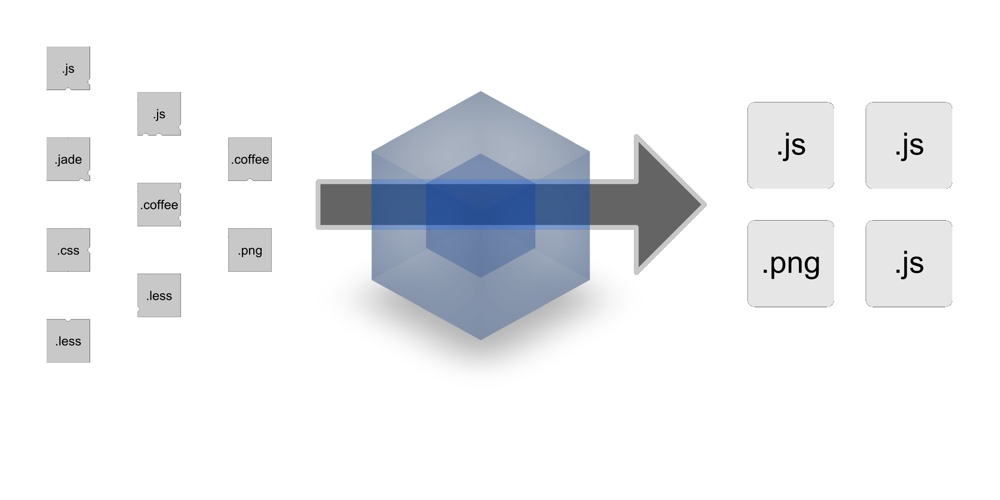
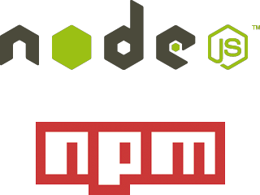

webpack
your final module bundler
whoami
andrea giannantonio
aka
jellybelly
front-end developer at
|
@jellybellydev
|
modular javascript
|
|
how define module
global variables / namespace / script tag
commonjs
var $ = require('lib/jQuery'),
_ = require('lib/lodash');
//...stuff
module.exports = ...;
amd
define(
'fooModule',
['lib/jQuery', 'lib/lodash'],
function ($, _) {
//...stuff
return { ... }
}
});
require(['lib/jQuery', 'fooModule'],
function ($, foo) {
//...stuff
}
});
amd with commonjs
define(function (require, exports, module) {
var $ = require('lib/jQuery'),
_ = require('lib/lodash');
//...stuff
module.exports = ...;
});
es6
import 'lib/jQuery' as $;
import 'lib/lodash' as _;
//...stuff
export var result = { ... }
webpack
is a module bundler and not a task runner
understands almost any module system: AMD, CommonJS, ES6 modules, etc
analyzes dependencies among your modules (not only JS but also CSS, HTML, etc) and generates assets
creates one or many bundles
gives you hooks to transform modules
the flow
install
npm install webpack --save-devnpm install webpack -gconfiguration
command line interface
webpack <entry.js> <result.js>node.js api (great to integrate with grunt, gulp, broccoli, etc)
var webpack = require('webpack');
webpack( { /* configuration */ },
function(err, stats) { /* stuff */ });file module (touch webpack.config.js)
module.exports = { /* configuration */ };options
- context: base directory for resolving the entry option (it is absolute path)
- entry: the entry point of your bundle (can be a string, an array or an object)
- output: determines the out folder, file names, etc
- module: options affecting normal modules, like which one must be automatically loaded
- resolve: determines how modules are loaded
- devtool: enhance debugging (generates map files)
- plugins: additional plugins added to the compiler
- more...
do you want to know more?
let's go to the code

who uses it


comparison
| feature | webpack | requirejs | browserify | jspm | rollup |
|---|---|---|---|---|---|
| commonjs `require` | yes | only wrapping in define | yes | yes | plugin |
| amd `define` | yes | yes | plugin | yes | no |
| amd `require` | yes | yes | no | yes | no |
| amd `require` loads on demand | yes | manual configuration | no | yes | no |
| single bundle | yes | yes | yes | yes | yes |
| multiple bundles | yes | manual configuration | manual configuration | yes | no |
| common bundle | manual configuration | yes | manual configuration | no | no |
| watch mode | yes | no | yes | no | no |
webpack 2 is coming
roadmap
- native es6 import, export and system.import
- tree shaking for es6
- config can be a function and –env
- simplification resolving options
- chunk loading stuff now relies on promise being available
recap
- allow commonjs, amd and es6
- allow single and multiple entry point
- common plugin for shared code between modules
- minimize your code
- support loader to pre-process files i.e. sass, less, jsx etc.
- loaders +150
- plugins +30
- live reload with webpack-dev-server
- friend of your task runner
questions?
thank you
credits
- webpack docs
- webpack the new rock star of build tools by Андрей Вандакуров
- webpack the not another task runner tool by Antonio Santiago
- let’s talk about webpack by Aleksandr Tkalenko
- webpack the module bundler by Alper Ortac
- webpack is awesome by Daniel Perez
- who uses it by stackshare.io
- giphy.com